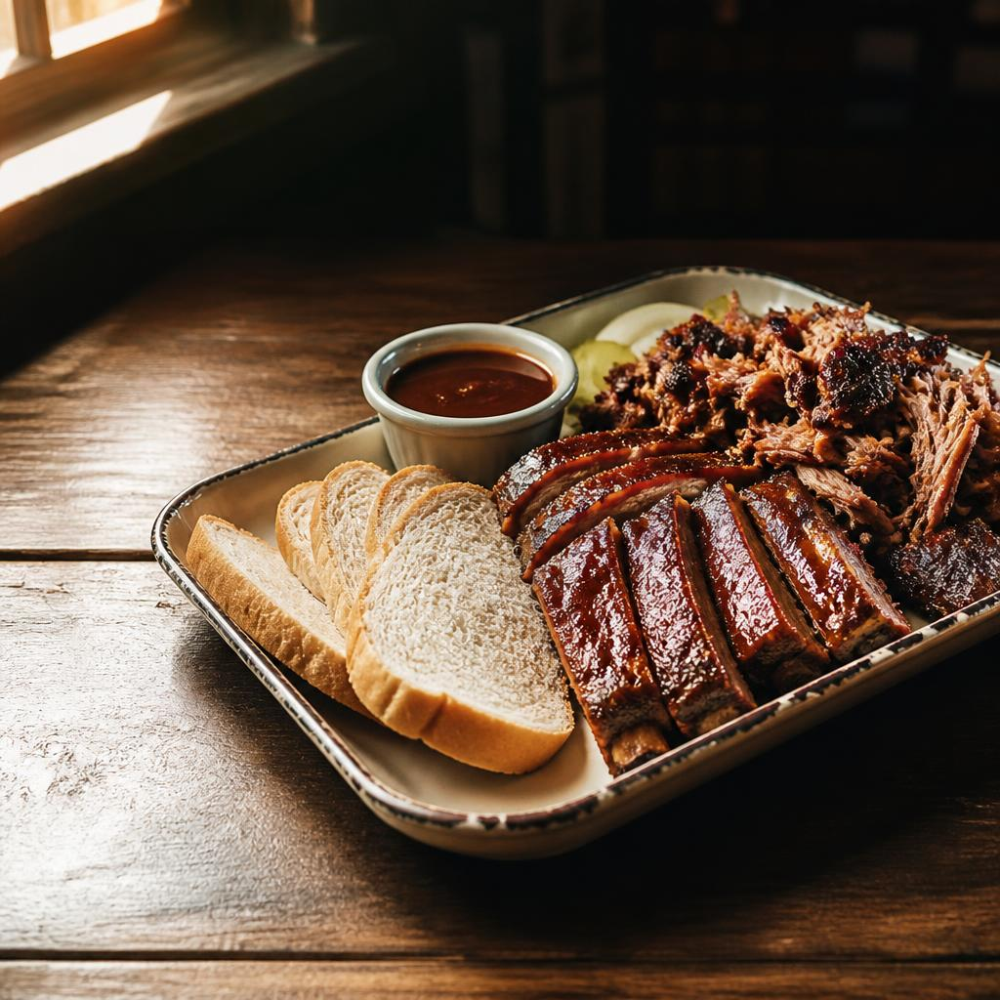

A city with room to surprise you
Birmingham,
with a little
more in it.
Steel-town roots, porch-swing warmth, and a table that always has room for one more.
Get a taste of the city
GOOD THINGS TAKE THEIR TIME33°31′N 86°48′W
The Magic City, Alabama
01 / AT THE TABLELOCAL FLAVOR
A Birmingham kind of welcome
Barbecue,
the Birmingham way.
Barbecue here is less a trend than a reason to gather. Local pitmasters tend their smokers low and slow, turning out tender meat with a deep, wood-fired edge. Come hungry; leave with a favorite spot to tell someone about.
A little more on Alabama barbecue Pull up a chair.A few things to know
Small facts.
Big character.
- 01The nicknameThe Magic City
- 02People call home195,893 residentsJuly 1, 2025 estimate · U.S. Census Bureau
- 03Alabama became a state1819December 14 · Encyclopedia of Alabama
CITY HALL
Randall L. Woodfin
Mayor of Birmingham · Meet the mayor
A little Alabama sunshine
Say hello to
the yellowhammer.
Alabama's state bird is a Northern flicker with a bright flash of yellow under its wings. Tap the picture for a little flutter.
Alabama state bird factsYour pocket-sized guide
Things I Like
Make a little list of what you love about Birmingham. It stays right here in this page.